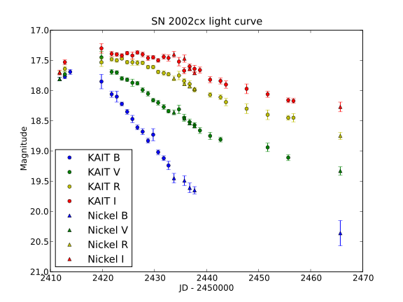
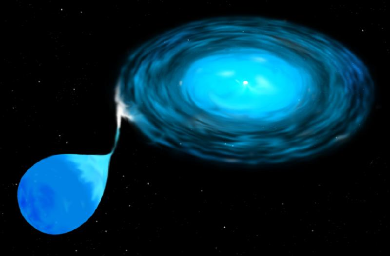

ІСТОРІЯ ДОСЛІДЖЕНЬ
Перший представник цього підтипу наднових, SN 2002cx, був описаний Лі та його колегами (2003) в статті під назвою «Найбільш дивна з відомих наднових типу Ia». Пізніше Джха та інші (2006) представили інші подібні об'єкти, зробивши SN 2002cx прототипом нового підтипу наднових. Фолі та ін. (2013) розробили класифікацію наднових типу Iax, наполягаючи на відокремленні цих зір від наднових типу Ia як окремого типу наднових.
Великим проривом у розумінні наднових Iax стало відкриттям системи-попередника SN 2012Z у галактиці NGC 1309. Науковцям пощастило, що у цій самій галактиці раніше вибухнула нормальна наднова типу Ia SN 2002fk, яка використовувалась для калібрування шкали космічних відстаней для вимірювання сталої Габбла. Для цього робились настільки глибокі зображення цієї галактики за допомогою космічного телескопа Габбла, щоб на них можна було розрізнити цефеїди й таким чином виміряти відстань до галактики. На цих глибоких архівних зображеннях і було знайдено джерело, що збігається з місцем розташування наднової 2012Z. Це джерело виявилося яскравою блакитною зорею, ймовірно, гелієвою зорею-компаньйоном білого карлика. Подальші зображення, отримані після згасання наднової, показали на цьому місці яскраве червоне джерело, — ймовірно, зорю-компаньйон або залишок вибуху білого карлика. Це зробило Iax першим з підтипів наднових Ia, для якого вдалось знайти зорю-попередника наднової.
На початок
СПОСТЕРЕЖНІ ОСОБЛИВОТІ
Ключовою відмінністю наднових Iax є їхня швидкість розширення, що зазвичай вимірюється за доплерівським розширенням спектральних ліній. Якщо для більшості наднових Ia швидкість розширення становить близько 10000 км/с, то для наднових Iax вона зазвичай лежить в межах від 2000 до 7000 км/с.
Оптичні криві блиску наднових Iax в цілому схожі на наднові Ia, але більш різноманітні. Зазвичай наднові Iax мають швидший підйом яскравості (приблизно 10-20 днів), не мають типового для наднових Ia «другого піку» в червоному та ближньому інфрачервоному діапазонах, а пізні криві блиску спадають повільніше, ніж у наднових Ia.
Пікова оптична світність наднових Iax нижча, ніж для наднових Ia, і охоплює набагато ширший діапазон: абсолютна зоряна величина наднових Iax варіюється від −19 до −13, натомість як для наднових Ia завжди є близькою до −19.3.
Пізній спектр наднових Iax радикально відрізняються від типу Ia (і майже від усіх інших наднових будь-якого типу) тим, що ніколи не переходить у повністю «небулярну» фазу, в якій би в оптичному спектрі домінували широкі заборонені лінії. Навпаки, в оптичних спектрах, отриманих навіть через рік після максимуму блиску, наднові Iax все ще демонструють так звані дозволені лінії з низькими швидкостями (від сотень до 3000 км/с).
Просторовий розподіл наднових Iax радикально відрізняється від звичайних наднових Ia і більш схожий на наднові типів IIP або SN 1991T/1999aa. Наднові Iax трапляються майже виключно в галактиках пізнього типу з активним зореутворенням. Це свідчить про те, що наднові типу Iax можуть виникати лише у відносно молодій зоряній популяції.
Частота вибухів наднових підтипу Iax оцінюється в 18-48 % від загальної частоти всіх наднових Ia. Це робить наднові Iax найчисленнішими з «нетипових» наднових типу Ia.
На початок
ТЕОРЕТИЧНІ МОДЕЛІ
Найпопулярніша теорія наднових типу Iax полягає в наступному. У тісній подвійній системі перебувають гелієва зоря і вуглецево-кисневий або вуглецево-киснево-неонний білий карлик. Речовина з гелієвої зорі перетікає на білий карлик, накопичуючись на його поверхні. Після досягнення білим карликом маси Чандрасекара, в ньому запускаються термоядерні реакції. Однак вмикання реакцій відбувається не зі швидкістю розповсюдження вибухової хвилі (детонація), а повільно (дефлаграція). У результаті вибух зорі виявляється спокійнішим, ніж у класичних наднових Ia і не обов'язково руйнує зорю.
Окремі аспекти цієї моделі ставляться під сумнів. Наприклад, дискутується, чи завжди для появи наднової типу Iax потрібна маса Чандрасекара, чи завжди механізмом вибуху є дефлаграція, чи різноманіття властивостей наднових типу Iax повністю пояснюється зміною маси викиду, і чи завжди сусідство білого карлика з гелієвою зорею призводить до наднової Iax.
На початок
ФОТО

Крива блиску наднової SN 2002cx типу Iax у фільтрах BVRI системи Джонсона з двох телескопів, KAIT і Nickel. У ближньому інфрачервоному фільтрі I наднова демонструє широке плато, натомість звичайні наднові Iax мають на цих довжинах хвиль вторинний максимум.

Художнє зображення перетікання речовини з зорі-компаньйона на білий карлик у тісній подвійній системі. Зоря-компаньйон має витягнуту форму, бо вже заповнює свою порожнину Роша. Речовина перетікає через точку Лагранжа й утворює акреційний диск навколо білого карлика.
На початок